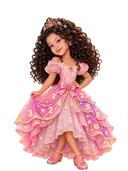
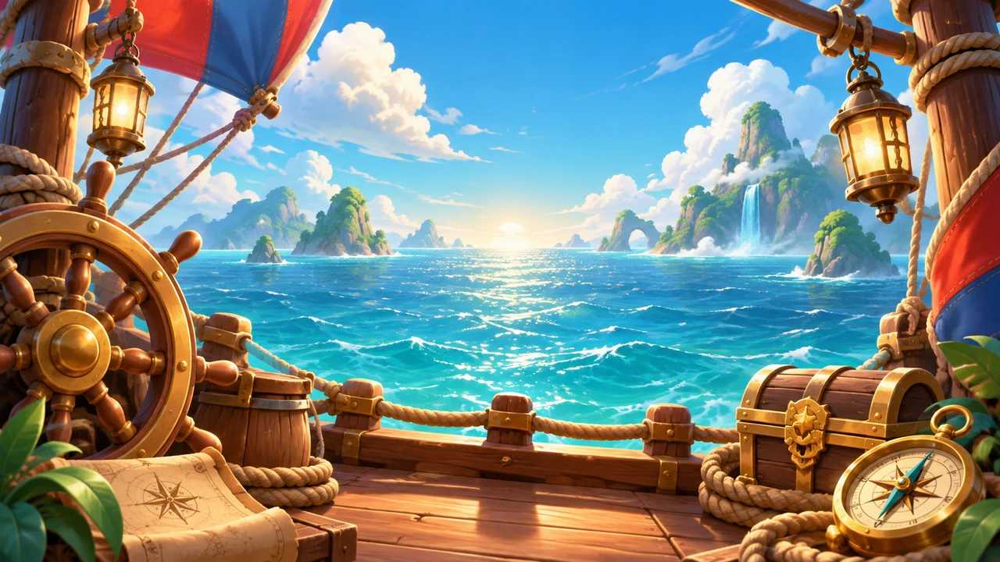
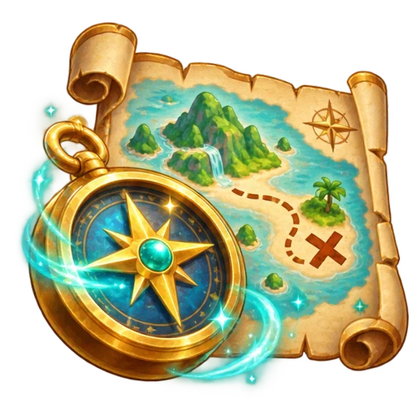
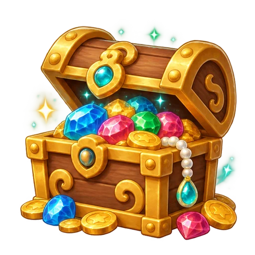
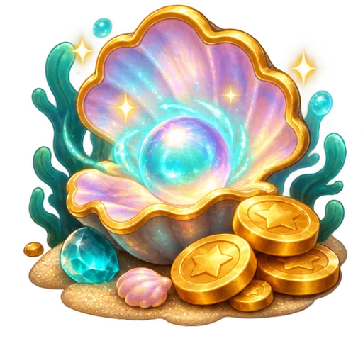

Tabuada Quest 2.0
Uma nova aventura está começando
Regiões, ilhas, tesouros e uma tripulação pronta para explorar os mares.
Tripulação
Avatares-base
Aventura
Elementos do novo mundo

Regiões e ilhas
Uma jornada marítima substitui os antigos portais e mundos.

Tesouros
Baús e recompensas acompanham o progresso pela aventura.

Recompensas
Conquistas especiais vão marcar os grandes momentos da jornada.
A construção do jogo continua. Esta página acompanha as mudanças liberadas a cada etapa.